Authentic Cretan Restaurants & Local Tavernas
Peskesi Restaurant
An award-winning authentic Cretan restaurant serving farm-to-table traditional meats and ancient local recipes inside a beautifully restored historical stone house.
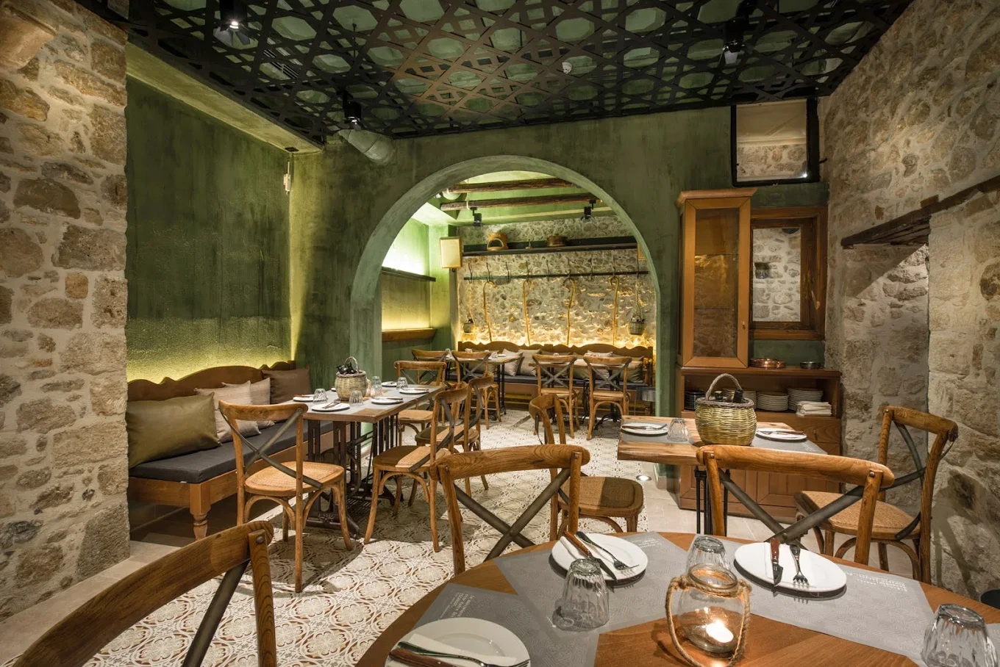
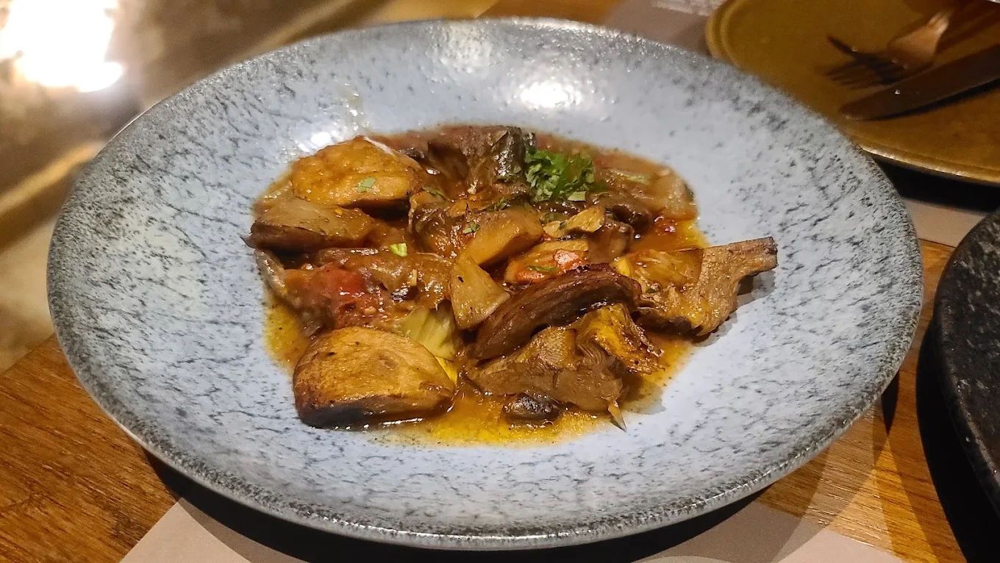
📍 Address: Kapetan Haralambi 6, Iraklio 712 02, Greece
🚘 Proximity: Located in the center of Heraklion Old Town, right off Lion Square.
Thalassino Ageri
A spectacular beachfront tavern located right on the rocky shoreline of Tabakaria, specializing in fresh Mediterranean seafood catches and romantic seaside sunsets.
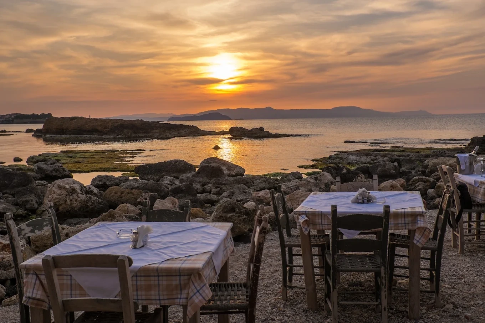
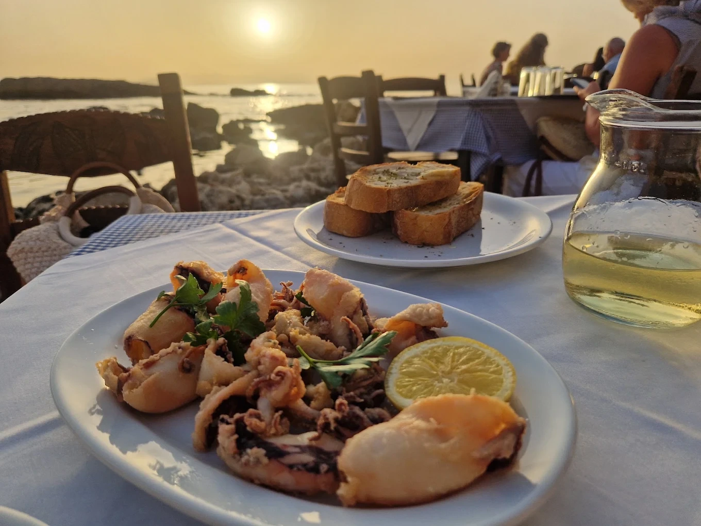
📍 Address: Vivilaki 35, Chania 731 33, Greece
🚘 Proximity: Tucked into the historic waterfront district of Tabakaria.
Hovoli Gyros
Famous among locals for serving massive, perfectly spiced pork and chicken gyros wrapped in soft, warm handmade pita with traditional tzatziki.
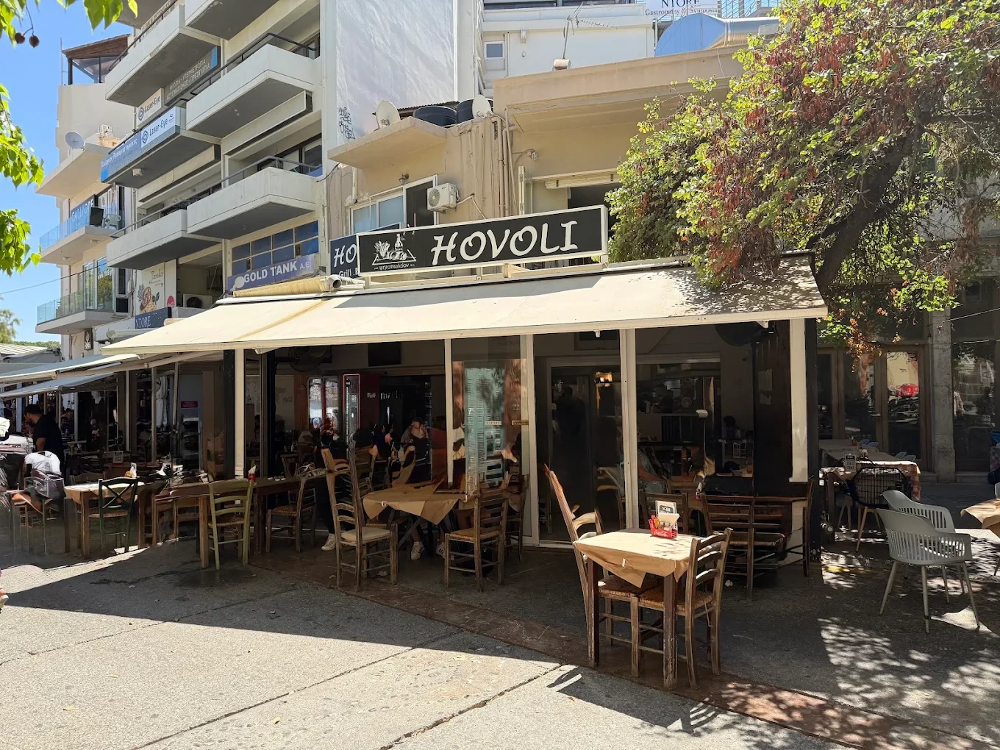
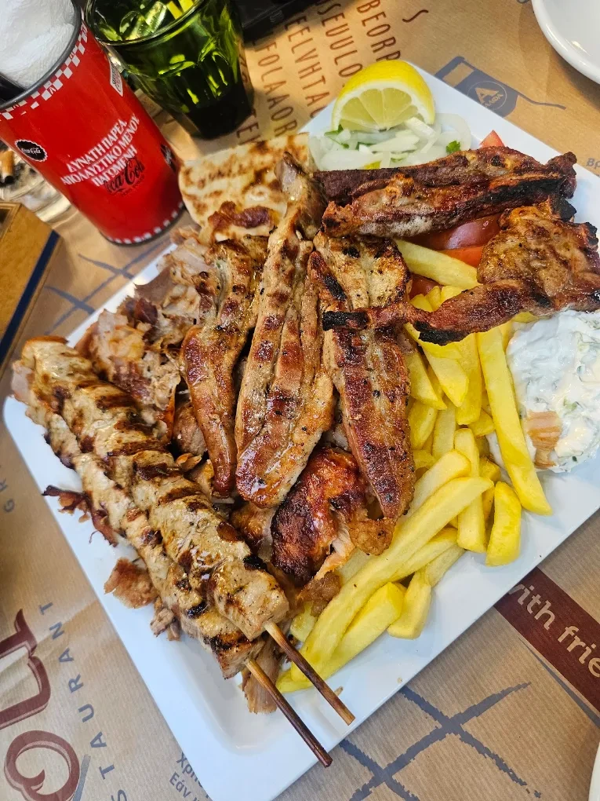
📍 Address: Dedalou 5, Iraklio 712 02, Greece
🚘 Proximity: Located directly on the bustling Dedalou pedestrian walking street.
Oasis Gyros
A legendary, tiny hole-in-the-wall spot in Chania center known for serving arguably the finest traditional pork gyros in western Crete since 1967.
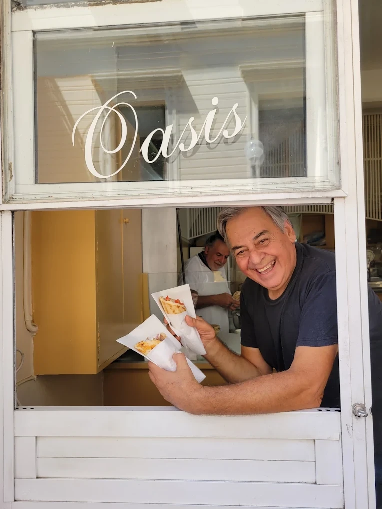
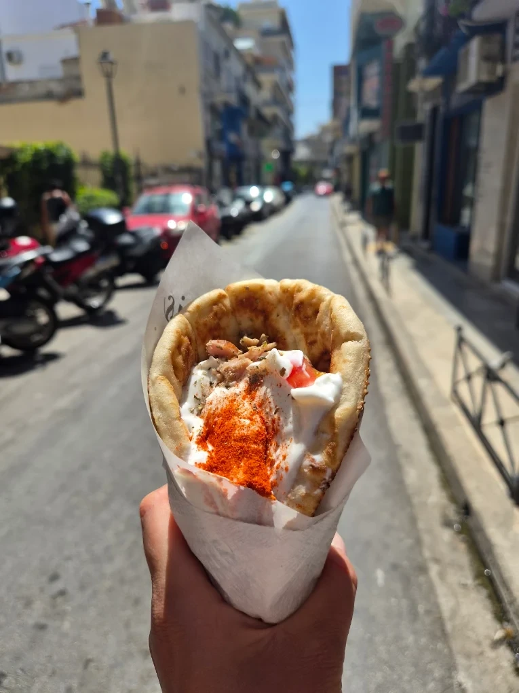
📍 Address: Voloudakidon 4, Chania 731 34, Greece
🚘 Proximity: Just a short walk from Chania's central Municipal Market square.
Kirkor Bougatsa
Located right in front of the iconic Lions Square fountain, Kirkor has been baking legendary Cretan Bougatsa pastry filled with sweet cream or sour myzithra cheese since 1922.
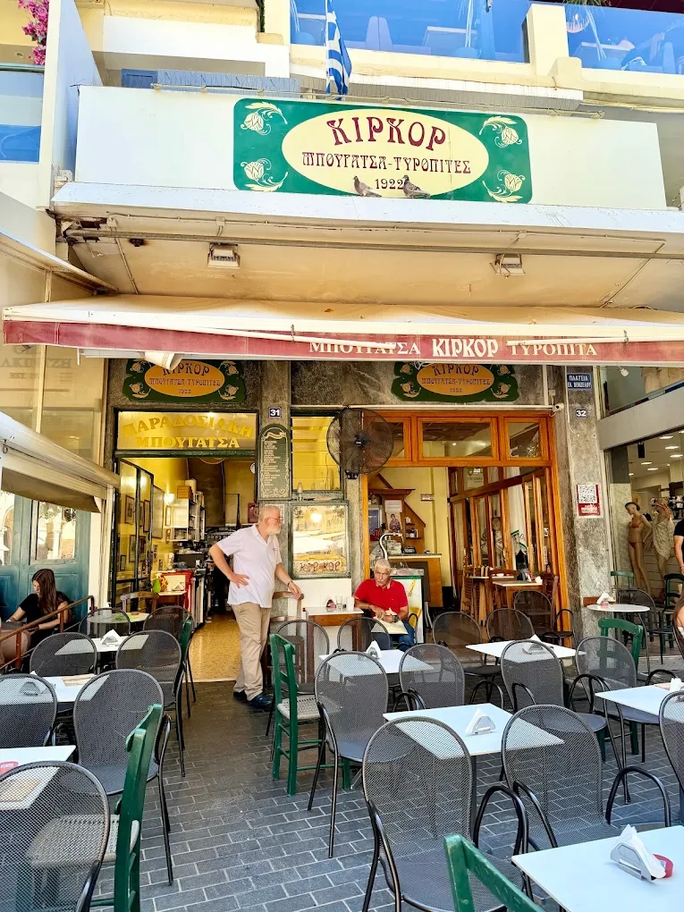
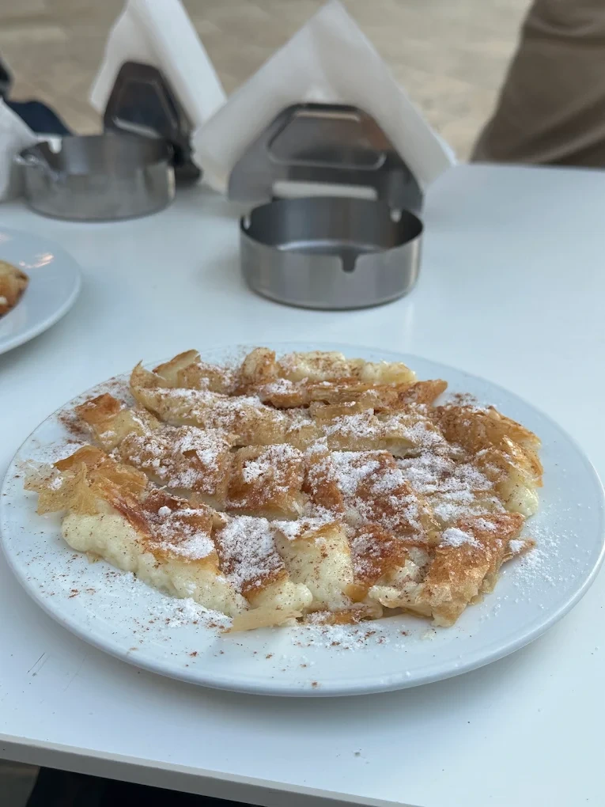
📍 Address: Eleftheriou Venizelou Square 16, Iraklio 712 02, Greece
🚘 Proximity: Sits directly opposite the historical Morosini Lion Fountain.
Koukouvaya Patisserie
Perched high on the hills over Chania near the Venizelos Graves, offering panoramic views of the entire harbor alongside their legendary signature rich chocolate cakes.
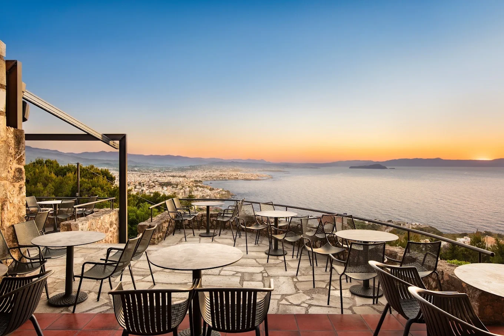
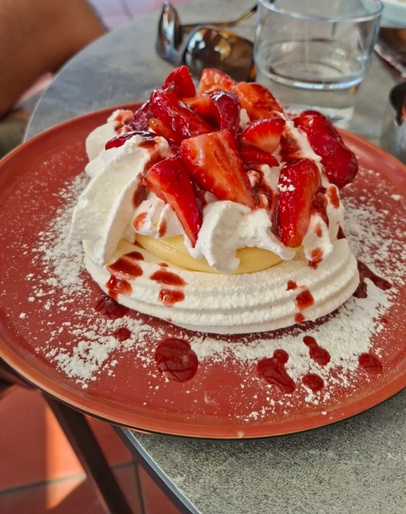
📍 Address: Michail Kalorizikou 7, Chania 731 33, Greece
🚘 Proximity: Located high up on Profitis Ilias hill layout track, overlooking Chania city harbor.